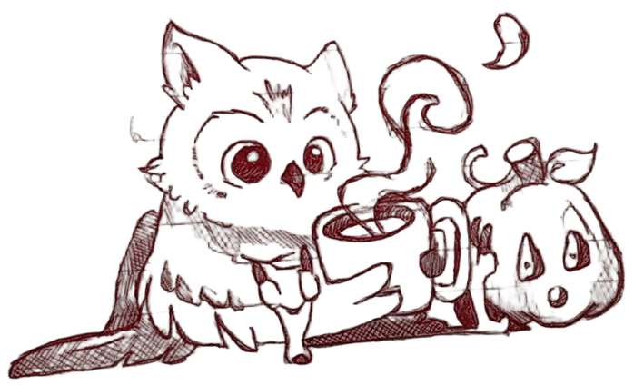

На краю октября, где дни короче вздохов, жил совёнок, который не умел спать. Другие птицы давно закрывали глаза, а он всё сидел — и слушал, как остывает мир.
Однажды он нашёл тыкву. Она была пустая внутри, но кто-то когда-то вырезал ей улыбку. Совёнок заглянул внутрь и подумал: «Она тоже не спит.»
Он принёс ей горячее какао. Налил в свою маленькую чашку, сел рядом и стал дуть на пар. Тыква молчала, но в её вырезанных глазах появился тёплый свет — будто от того, что рядом кто-то есть.
С тех пор каждую осень, если выйти во двор в самую тихую ночь, можно увидеть: маленький силуэт с чашкой сидит рядом с чем-то круглым и светящимся. И пахнет какао.